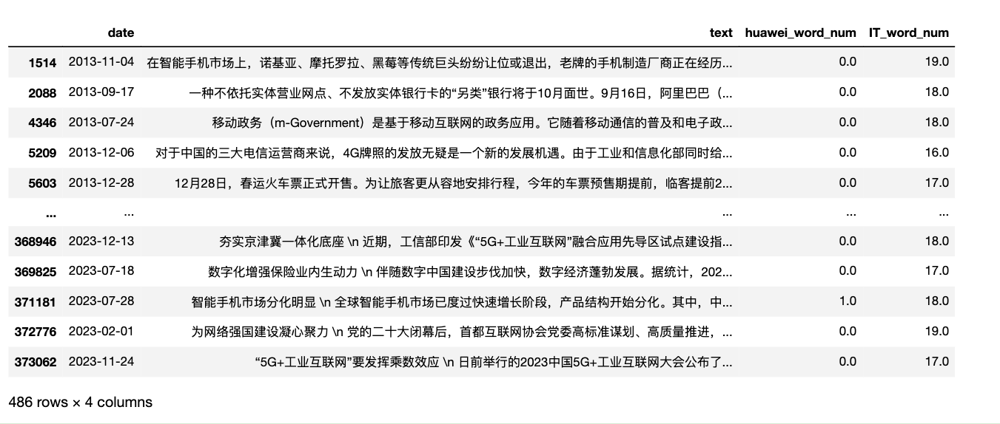
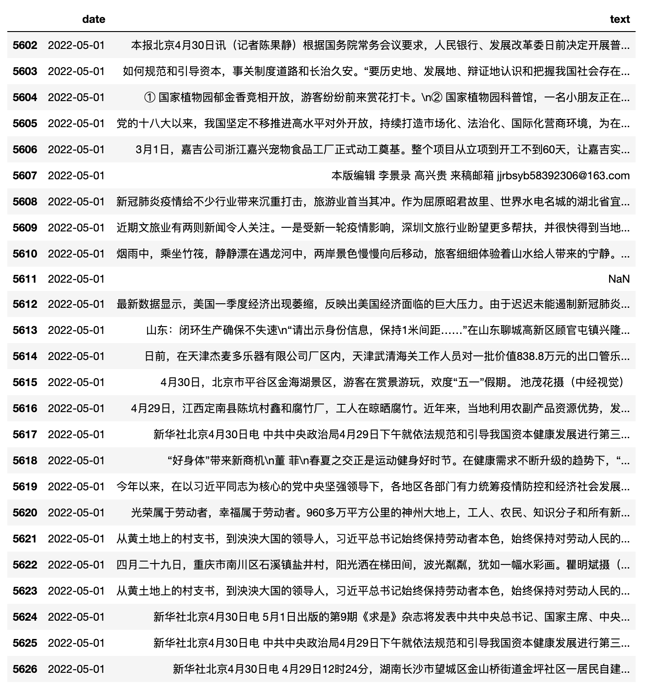
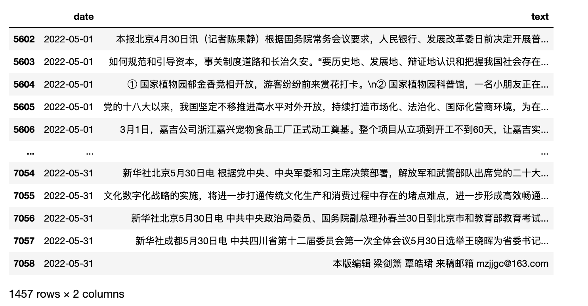

一、数据集概况
人(yong)民(hu)日(dang)报、 经(de)济(ling)日(dao)报， 去掉()及()内字符的媒体数据，为避讳， 后文数据集命名统一为rmrb、jjrb。
1.1 rmrb
来源: rmrb
格式: txt、csv
字段: date、text
日期: 1946-05-15~2023-08-10
记录数: 2005257
文件树结构
- rmrb
|- csvs 分年份存储
|-1946.csv.gzip
...
|-2023.csv.gzip
|-txts
|-1946
|-1946-05.zip
...
|-1946-12.zip
...
|-2023
|-2023-01.zip
...
|-2023-08.zip
1.2 jjrb
来源: jjrb
格式: txt、csv
字段: date、text
日期: 2008-01-27 ~ 2022-12-31
记录数: 379221
文件树结构
- jjrb
|- csvs
|-2008.csv.gzip
...
|-2022.csv.gzip
|-txts
|-2008
|-2008-01.zip
...
|-2008-12.zip
...
|-2022
|-2022-01.zip
...
|-2022-12.zip
1.3 研究用途
可从中提取丰富的指标，包括但不限于经济政策不确定性指数EPU 、 媒体关注度、媒体情绪、文本相似度。此外， 可训练词向量，开发新的概念词典，构建新的指标指数。数据带时间， 参照前面指标， 依主体、日期、指标进行计算， 可构造面板数据，因此在经济学、管理学、新闻传播学、公共管理等领域均有较高的研究价值。
相关参考文献
[1]洪永淼,刘俸奇,薛涧坡.政府与市场心理因素的经济影响及其测度[J].管理世界,2023,39(03):30-51.
[2]刘景江,郑畅然,洪永淼.机器学习如何赋能管理学研究？——国内外前沿综述和未来展望[J].管理世界,2023,39(09):191-216.
[3]张一帆,林建浩,樊嘉诚.新闻文本大数据与消费增速实时预测——基于叙事经济学的视角[J].金融研究,2023,(05):152-169.
[4]Huang, Yun, and Paul Luk. "Measuring economic policy uncertainty in China." China Economic Review 59 (2020): 101367
[5]欧阳资生,陈世丽,杨希特,刘凤根,周学伟.经济政策不确定性、网络舆情与金融机构系统性风险[J].管理科学学报,2023,26(04):62-86.
[6]逯东,宋昕倍.媒体报道、上市公司年报可读性与融资约束[J].管理科学学报,2021,24(12):45-61.
[7]彭涛,黄福广,孙凌霞.经济政策不确定性与风险承担:基于风险投资的证据[J].管理科学学报,2021,24(03):98-114.
[8]庞锐.采纳与内化：多重制度压力如何影响河长制创新扩散——基于省级政府的定向配对事件史分析[J].公共管理学报,2023,20(02):25-37+165-166.
1.4 获取数据
内容为付费数据集，
【rmrb】按年度，每年50元, 全量购买500元
【jjrb】按年度，每年50元, 全量购买200元
同时购买【rmrb】【jjrb】全量数据，500元
推荐同时购买【rmrb】【jjrb】全量数据集
加微信 372335839， 备注「姓名-学校-专业」
二、读取数据
2.1 批量获取路径
数据集下载到本地， 又经过手动解压， 现在想用glob库自动获取所有txt文件路径。 以 **「jjrb/txts」**为例,
* 可以匹配文件夹名或者文件名， jjrb/*/*/*/.txt 含义可以理解为 jjrb/txts/year/month/txt文件
import glob
# 当前代码所在的ipynb文件 与 「jjrb文件夹」是兄弟辈关系，同处于一个文件夹内
txt_files = glob.glob('jjrb/*/*/*/.txt', recursive=False)
返回结果
jjrb/txts/2008/2008-01/2008-01-27-0.txt
jjrb/txts/2008/2008-01/2008-01-27-1.txt
jjrb/txts/2008/2008-01/2008-01-27-2.txt
...
jjrb/txts/2022/2022-12/2022-12-31-34.txt
jjrb/txts/2022/2022-12/2022-12-31-35.txt
jjrb/txts/2022/2022-12/2022-12-31-36.txt
2.2 读取txt
读取任意txt， 以 jjrb/txts/2008/2008-01/2008-01-27-0.txt为例
text = open('jjrb/txts/2008/2008-01/2008-01-27-0.txt').read()
读取多个txt
for txt_file in txt_files:
text = open(txt_file).read()
2.3 读取csv
压缩文件 jjrb/csvs/2022.csv.gzip 可直接读取
import pandas as pd
# 当前代码所在的ipynb文件 与 「jjrb文件夹」是兄弟辈关系，同处于一个文件夹内
df = pd.read_csv('jjrb/csvs/2022.csv.gzip', compression='gzip')
#也可解压后再读取csv， 两者功效等同，但前者读取更快。
#df = pd.read_csv('jjrb/csvs/2022.csv')
print(len(df))
df.head()
Run
17394

三、文本检索
3.1 是否含某(类)词
如检索jjrb中text字段中是否提到了「华为」这个词，至少出现一次，标记为True
df['text'].str.contains('华为')
Run
0 False
1 False
2 False
3 False
4 False
...
17389 False
17390 False
17391 False
17392 False
17393 False
Name: text, Length: 17394, dtype: object
text字段中提及「it」相关词，如电脑、手机、互联网、app等，至少出现一次，标记为True
df['text'].str.contains('电脑|手机|互联网|app')
Run
0 False
1 True
2 False
3 False
4 False
...
17389 False
17390 False
17391 False
17392 False
17393 False
Name: text, Length: 17394, dtype: object
3.2 含某(类)词记录数
统计2008年jjrb出现华为、华为相关词的新闻数量
huawei_record_num = df['text'].str.contains('华为').sum()
IT_record_num = df['text'].str.contains('电脑|手机|互联网|app').sum()
print(huawei_record_num)
print(IT_record_num)
Run
153
1972
3.3 含某类词个数
每条新闻中含某(类)词的个数
df['huawei_word_num'] = df['text'].str.count('华为')
df['IT_word_num'] = df['text'].str.count('电脑|手机|互联网|app')
df.head()
IT_word_num的最大值、中位数、均值、最小值
print('IT max:', df['IT_word_num'].max())
print('IT median:', df['IT_word_num'].median())
print('IT mean:', df['IT_word_num'].mean())
print('IT min:', df['IT_word_num'].min())
Run
IT max: 148.0
IT median: 0.0
IT mean: 0.33661336613366133
IT min: 0.0
3.4 按条件筛选
按照字段 IT_word_num，筛选出值大于10的记录。即新闻中至少出现10次IT词的记录
df[df['IT_word_num']>10]
多条件筛选, 结合且或非
#筛选出IT_word_num大于15， 且小于20
df[(df['IT_word_num']>15) & (df['IT_word_num']<20)]

#筛选出IT_word_num大于10， 或 huawei_word_num大于10
df[(df['IT_word_num']>10) | (df['huawei_word_num']>10)]

3.5 .apply
选择某字段，对该字段批量计算. 这里以统计某类概念词个数为例。是df[‘text’].str.count的另类实现方法
#df['IT_word_num'] = df['text'].str.count('电脑|手机|互联网|app')
def count_IT(text):
result = 0
keywords = ['电脑', '手机', '互联网', 'app']
for keyword in keywords:
result = result + text.count(keyword)
return result
#这两种算法结果是相同的，但是apply遇到nan数据会报错，所以这里都统一对nan替换为''
df['IT_word_num'] = df['text'].fillna('').str.count('电脑|手机|互联网|app')
df['IT_word_num2'] = df['text'].fillna('').apply(count_IT)
四、日期操作
4.1 日期转化
将date更改为datetime数据类型,之后可筛选指定日期的记录，之后可筛选指定日期的记录
import pandas as pd
#为了展示简洁一些， 剔除掉之前的实验结果，重新读取
df = pd.read_csv('jjrb/csvs/2022.csv.gzip', compression='gzip')
df['date'] = pd.to_datetime(df['date'])
4.2 记录的日期范围
print(df['date'].max())
print(df['date'].min())
Run
2022-12-31 00:00:00
2022-01-01 00:00:00
4.3 筛选某时期记录
找出 2022-05-01当天所有记录
#逻辑且，同时满足year=2002， month=5， day=1
date_condition_mask = (df['date'].dt.year==2022) & (df['date'].dt.month==5) & (df['date'].dt.day==1)
df[date_condition_mask]

筛选五月的所有记录
#逻辑且，同时满足year=2002， month=5
date_condition_mask2 = (df['date'].dt.year==2022) & (df['date'].dt.month==5))
df[date_condition_mask2]

4.4 按月份保存数据
按月份逐月保存到csv中，首先要对dataframe进行分组，这里用到pd.Grouper(key, freq)
- key 根据某字段进行分组
- freq 周期，
年Y 月M 日D
for date, month_df in df.groupby(pd.Grouper(key='date', freq='M')):
#这里的date， month_df都是特殊数据类型
print(type(date), type(month_df))
Run
<class 'pandas._libs.tslibs.timestamps.Timestamp'> <class 'pandas.core.frame.DataFrame'>
<class 'pandas._libs.tslibs.timestamps.Timestamp'> <class 'pandas.core.frame.DataFrame'>
<class 'pandas._libs.tslibs.timestamps.Timestamp'> <class 'pandas.core.frame.DataFrame'>
<class 'pandas._libs.tslibs.timestamps.Timestamp'> <class 'pandas.core.frame.DataFrame'>
<class 'pandas._libs.tslibs.timestamps.Timestamp'> <class 'pandas.core.frame.DataFrame'>
<class 'pandas._libs.tslibs.timestamps.Timestamp'> <class 'pandas.core.frame.DataFrame'>
<class 'pandas._libs.tslibs.timestamps.Timestamp'> <class 'pandas.core.frame.DataFrame'>
<class 'pandas._libs.tslibs.timestamps.Timestamp'> <class 'pandas.core.frame.DataFrame'>
<class 'pandas._libs.tslibs.timestamps.Timestamp'> <class 'pandas.core.frame.DataFrame'>
<class 'pandas._libs.tslibs.timestamps.Timestamp'> <class 'pandas.core.frame.DataFrame'>
<class 'pandas._libs.tslibs.timestamps.Timestamp'> <class 'pandas.core.frame.DataFrame'>
<class 'pandas._libs.tslibs.timestamps.Timestamp'> <class 'pandas.core.frame.DataFrame'>
for date, month_df in df.groupby(pd.Grouper(key='date', freq='M')):
#可以抽取出date中的年月信息
print(date.year, date.month, type(month_df))
Run
2022 1 <class 'pandas.core.frame.DataFrame'>
2022 2 <class 'pandas.core.frame.DataFrame'>
2022 3 <class 'pandas.core.frame.DataFrame'>
2022 4 <class 'pandas.core.frame.DataFrame'>
2022 5 <class 'pandas.core.frame.DataFrame'>
2022 6 <class 'pandas.core.frame.DataFrame'>
2022 7 <class 'pandas.core.frame.DataFrame'>
2022 8 <class 'pandas.core.frame.DataFrame'>
2022 9 <class 'pandas.core.frame.DataFrame'>
2022 10 <class 'pandas.core.frame.DataFrame'>
2022 11 <class 'pandas.core.frame.DataFrame'>
2022 12 <class 'pandas.core.frame.DataFrame'>
for date, month_df in df.groupby(pd.Grouper(key='date', freq='M')
#以year-month.csv格式存储数据到csv中
month_df.to_csv(f'{year}-{month}.csv', index=False)
五、获取数据
【人民日报rmrb】按年度，每年50元。 全量购买300元。
【经济日报jjrb】按年度，每年50元。 全量购买300元。
【新闻联播xwlb】按年度，每年50元。 全量购买200元。
购买两类新闻全量数据， 500元; 购买三类新闻全量数据， 600元。 加微信 372335839， 备注「姓名-学校-专业」。